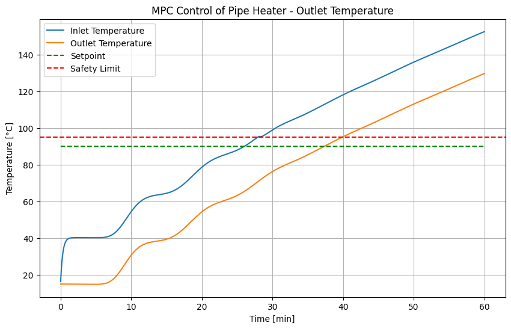
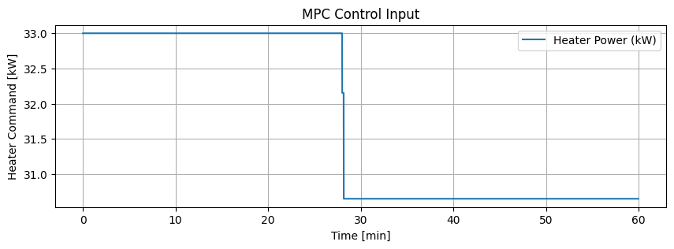

import numpy as np
from PipeEnv import PipeHeaterSafeEnvGymnasium
from MPCCon import MPCController
from params import *
import matplotlib.pyplot as plt
params["N"] = 30
env = PipeHeaterSafeEnvGymnasium(params, Tinlet=15.0, Tset= 85.0, T_ext=10.0, dt=1.0, t_final=3600)
mpc_dt = 10.0
mpc = MPCController(params, dt=mpc_dt, Hp=80, Q=[0.0, 1e3], R=1e-5, Rd=1.0, T_set=[92.0, 90.0], T_safety=95.0, ramped = False)
obs, _ = env.reset()
---------------------------------------------------------------------------
ModuleNotFoundError Traceback (most recent call last)
Cell In[1], line 3
1 import numpy as np
2 from PipeEnv import PipeHeaterSafeEnvGymnasium
----> 3 from MPCCon import MPCController
4 from params import *
5 import matplotlib.pyplot as plt
File ~/PycharmProjects/NehemisControl/mybook/MPCCon.py:3
1 # mpc_controller.py (only the MPCController class shown, replace original)
2 import numpy as np
----> 3 import cvxpy as cp
6 class MPCController:
7 """
8 Linear MPC for PipeHeaterSafeEnvGymnasium.
9
(...)
15 - u is heater power in kW (same units as env action); internally env multiplies by 1e3.
16 """
ModuleNotFoundError: No module named 'cvxpy'
# the env exposes self.T inside; we assume we can access env.T for full state (otherwise use estimator)
x = env.T.copy()
u_prev = 0.0
traj = []
mpc_steps = int(mpc.dt / env.dt) # number of env steps per MPC update
setpoints = []
for step in range(3600):
# Update MPC only every mpc_steps
if step % mpc_steps == 0:
u_cmd, T_in_sp, T_out_sp = mpc.compute_action(x0=x, u_prev=u_prev)
u_prev = u_cmd # store for move suppression, rate constraints, etc.
# Apply the most recent MPC command
action = np.array([u_cmd], dtype=np.float32)
obs, reward, terminated, truncated, info = env.step(action)
# Save state
x = env.T.copy()
traj.append((step, x.copy(), u_cmd, reward))
setpoints.append((T_in_sp, T_out_sp))
if terminated:
break
# now traj contains the run; you can plot Toutlet (x[-1]) over time, etc.
# Unpack trajectory
steps = [t[0]/60 for t in traj]
T_out = [t[1][-1] for t in traj] # last element of state is outlet temperature
T_in = [t[1][0] for t in traj] # last element of state is outlet temperature
u_cmds = [t[2] for t in traj]
rewards = [t[3] for t in traj]
T_in_sp = [t[0] for t in setpoints] # last element of state is outlet temperature
T_out_sp = [t[1] for t in setpoints] # last element of state is outlet temperature
# Plot outlet temperature
plt.figure(figsize=(10,6))
plt.plot(steps, T_in, label="Inlet Temperature")
plt.plot(steps, T_out, label="Outlet Temperature")
plt.plot(steps,T_out_sp, color="g", linestyle="--", label="Setpoint")
plt.axhline(mpc.T_safety, color="r", linestyle="--", label="Safety Limit")
plt.xlabel("Time [min]")
plt.ylabel("Temperature [°C]")
plt.title("MPC Control of Pipe Heater - Outlet Temperature")
plt.legend()
plt.grid(True)
plt.savefig("images/MPC_main_results_2.png")
# Plot control input
plt.figure(figsize=(10,3))
plt.plot(steps, u_cmds, label="Heater Power (kW)")
plt.xlabel("Time [min]")
plt.ylabel("Heater Command [kW]")
plt.title("MPC Control Input")
plt.legend()
plt.grid(True)
plt.savefig("images/MPC_security.png")
plt.show()


import pandas as pd
# Convert trajectory data to DataFrame
df = pd.DataFrame({
"time_min": steps,
"Tinlet": T_in,
"Toutlet": T_out,
"HeaterPower_kW": u_cmds,
"reward": rewards,
})
# Save to CSV
csv_filename = "results/MPC_run_data_ramp.csv"
df.to_csv(csv_filename, index=False)
print(f"Saved results to {csv_filename}")
Saved results to results/MPC_run_data_ramp.csv
N=3000
x = env.T.copy()
traj_env = []
mpc_dt = 10.0
H = N/mpc_dt
env = PipeHeaterSafeEnvGymnasium(params, Tinlet=15.0, Tset=85.0, T_ext=10.0, dt=1.0, t_final=N)
mpc = MPCController(params, dt=mpc_dt, Hp=70, Q=100.0, R=1e-8, Rd=1.0, T_set=92.0, T_safety=95.0)
for step in range(N):
u_cmd = 30 # step input
action = np.array([u_cmd], dtype=np.float32)
obs, reward, terminated, truncated, info = env.step(action)
x = env.T.copy()
traj_env.append((step, x.copy(), u_cmd, reward))
if terminated:
break
steps_env = [t[0] for t in traj_env]
T_out = [t[1][-1] for t in traj_env] # last element of state is outlet temperature
T_in = [t[1][0] for t in traj_env] # last element of state is outlet temperature
# Define step sequence of length Hp
u_seq = np.ones(mpc.Hp) * 30
# Initial state (same as env start)
x0 = np.ones(np.shape(mpc.B)) * 15
# Predict using MPC internal model
X_pred = mpc._predict_trajectory(x0, u_seq)
time_mpc = np.arange(len(X_pred)) * mpc.dt
plt.figure()
plt.plot(steps_env, T_in, label="$T_{inlet}$ full model")
plt.plot(steps_env, T_out, label="$T_{outlet}$ full modele")
plt.plot(time_mpc, X_pred[:,0], '--', label="$T_{inlet}$ MPC prediction")
plt.plot(time_mpc, X_pred[:,-1], '--', label="$T_{outlet}$ MPC prediction")
plt.xlabel("time (s)")
plt.ylabel("Temperature in °C")
plt.legend()
plt.grid()
plt.savefig("images/MPC_vs_full_model.png")
plt.show()
---------------------------------------------------------------------------
ValueError Traceback (most recent call last)
Cell In[12], line 8
5 H = N/mpc_dt
7 env = PipeHeaterSafeEnvGymnasium(params, Tinlet=15.0, Tset=85.0, T_ext=10.0, dt=1.0, t_final=N)
----> 8 mpc = MPCController(params, dt=mpc_dt, Hp=70, Q=100.0, R=1e-8, Rd=1.0, T_set=92.0, T_safety=95.0)
10 for step in range(N):
11 u_cmd = 30 # step input
File ~/PycharmProjects/NehemisControl/mybook/MPCCon.py:38, in MPCController.__init__(self, params, dt, Hp, Q, R, Rd, T_set, T_safety, verbose)
36 self.N = params["N"]
37 self.Hp = Hp
---> 38 self.Q = np.diag(Q)
39 self.R = R
40 self.Rd = Rd
File ~/PycharmProjects/NehemisControl/.venv/lib/python3.10/site-packages/numpy/lib/_twodim_base_impl.py:315, in diag(v, k)
313 return diagonal(v, k)
314 else:
--> 315 raise ValueError("Input must be 1- or 2-d.")
ValueError: Input must be 1- or 2-d.